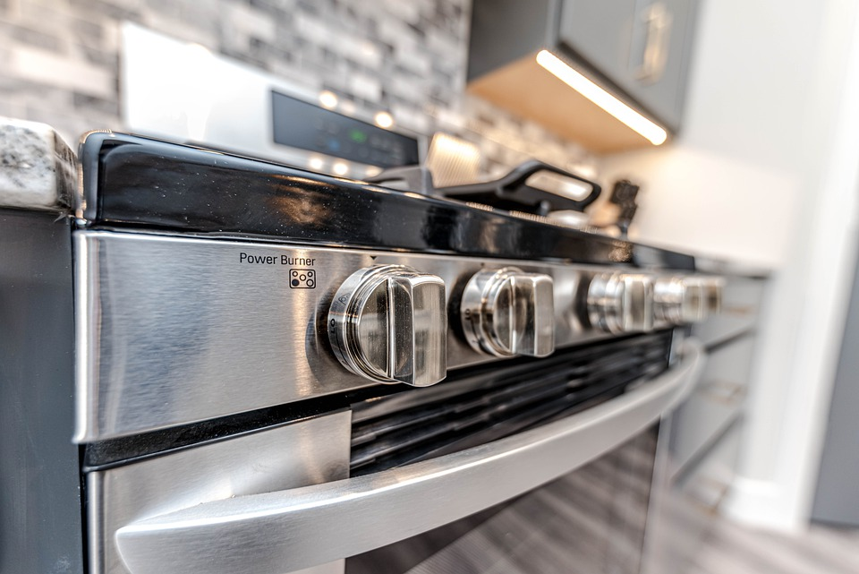
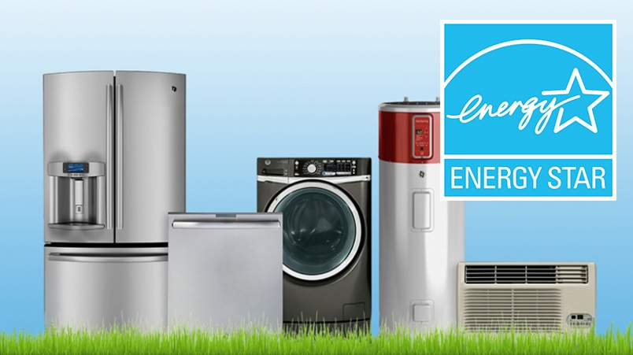

Every month or so, make sure there are no bulges or cracks and the fittings are tight
Oversize loads can damage your washer, so break up your laundry into smaller loads
Make sure you’re using the right kind for your model. Many energy-efficient washers require a low-sudsing detergent
Yes, you need to wash the washer. This will help keep it clean and smelling fresh. TIP! Every month or so, run an empty load of hot water with 2 cups of white vinegar. In the middle of the wash cycle, add ½ cup of detergent. Let the full cycle complete.
Doing this once a month will help ensure the washer won’t give off odors that can seep into your laundry. TIP! Use equal parts water and vinegar to clean the gasket
Even if you’re good about removing lint from the filter after every load, it’s common for lint to build up within the dryer, too. Once per year, disassemble the dryer and use a vacuum and a long vacuum hose attachment to clean out the lint.
Remove restrictions such as snow or leaves and clear shrubbery to enable proper air flow.
Your dryer’s entire venting system should be cleaned out from the inside of the dryer to the outside vent cap at least once per year. Professionals can be hired for this job but it’s usually a simple do-it-yourself job.
Yes, every cycle. It’s that important. Also, once per season, use a long-handle brush or vacuum attachment to remove lint from the filter’s chute, too.
If it’s taking longer for clothes to dry, it’s likely that lint is clogging the venting system and a thorough cleanout should happen a.s.a.p. Consider Lint Alert. It monitors for lint build-up and other blockage – alerting you if there is an air flow restriction in your dryer vent that could lead to a buildup of carbon monoxide in your home.
Brands and Service Call Percentages are : Whirlpool 0.59% .Samsung 2.38% . Bosch 4.76% .Beko 8.25% .Kitchen Aid 8.54% .GE 7.41% . Total 3.06 .The amounted to 37,061 service calls logged in 2020 The average repair rate for electric ranges is 3.06% in the first year.Appliances, in general, are about 9.7%
Some dishwashers have heat dry option by default. You can turn it off to save electricity. Some washing machines have energy savings button that you might never noticed. Refer to your user’s manual to see how it’s going to benefit you.
